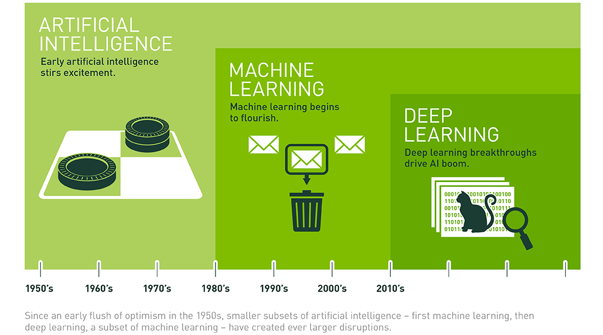
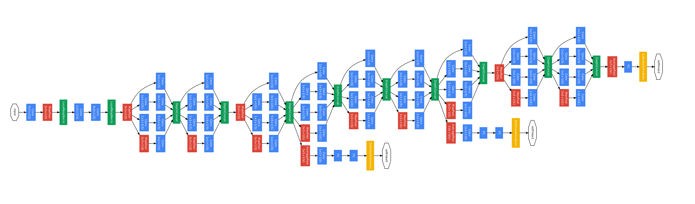
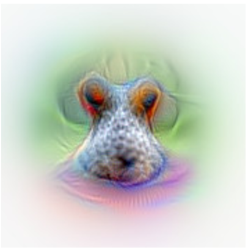
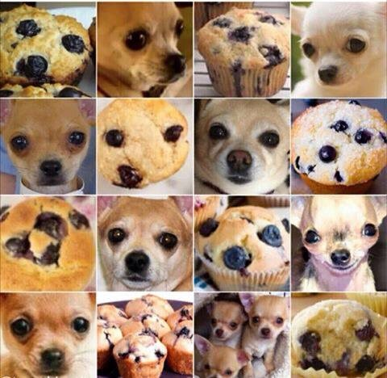

Introduction to Machine Learning
Simon Reinsperger | piedcode.com | @simon_rsphttps://github.com/abisz/talk-ml-introduction
Difference to AI and Deep Learning
 https://blogs.nvidia.com/blog/2016/07/29/whats-difference-artificial-intelligence-machine-learning-deep-learning-ai/Perceptron Learning Algorithm
- Supervised ML
- Classification
- Data needs to be linearly separable
Let's see it in action!
github.com/abisz/perceptron-exampleNeural Networks
- Multiple perceptrons
- Output from one (hidden) layer -> input for next
Convolutional Network
 http://joelouismarino.github.io/blog_posts/blog_googlenet_keras.htmlImage Recognition
 http://www.auduno.com/2016/06/18/peeking-inside-convnets/Not a trivial task...
 http://imgur.com/gallery/TTpIGvo http://www.boredpanda.com/dog-food-comparison-bagel-muffin-lookalike-teenybiscuit-karen-zack/
http://www.boredpanda.com/dog-food-comparison-bagel-muffin-lookalike-teenybiscuit-karen-zack/